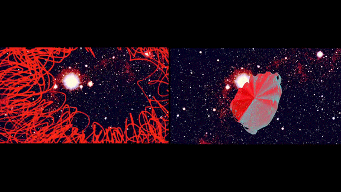

Machine Girl Factory is the project which pushes me into the research on the input and output of machine working. I send my daily drawing patterns to the 3D printers, letterpress printer, and laser-cut printer. The processing between the works which I draw and the pieces which machines print out are the translation from human languages to machine languages. My drawing patterns present my visual language. The fragments of machine produce from my order are the reflection of machine languages. In this machine girl factory, machine and girl are working together.
Machine Girl Factory, 2 mins 45 video, Multimedia and multi-material installation, Batter 5 group show, Cherry Gallery, Richmond, VA, April, 2019
Two screens video, projector, 3D print pieces, leaser cut pieces, leaser engraving pieces, letter press pieces, glue gun tracing pieces, book shelf
Machine Girl Factory 是一个关于机械工作的输入和输出的研究。我发送了我的日常绘画图案分别给3D打印机，字体印刷打印机，和激光切割打印机。在我绘制图案的过程和机械打印出我图案的过程是一种在人类语言和机械语言之间的翻译和转化。我绘制的图案是我的视觉表现图案。机械的最终产出是我给机械下达的命令的一种机械语言的反馈。在这个机械女孩的制作工厂中，机械和女孩工作在了一起。
Click here for watching Machine Girl Factory video on Vimeo.

